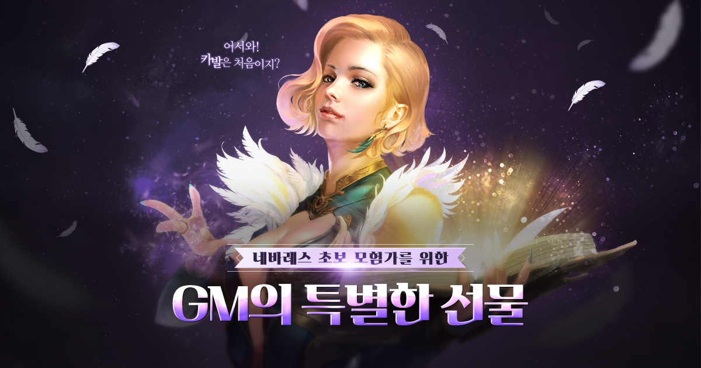
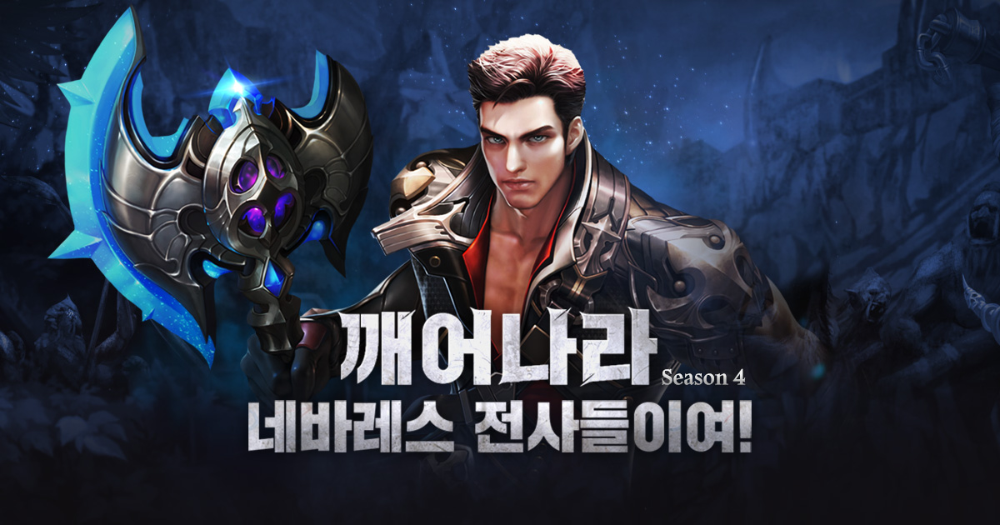
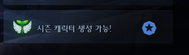
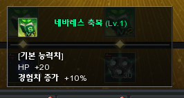
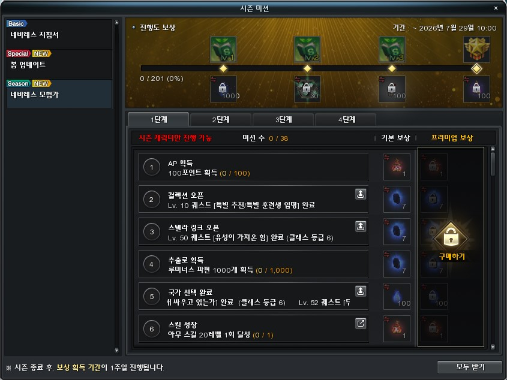
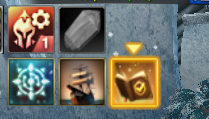

카발 온라인 21주년 이벤트 복귀·신규 지원 정리, 드래고늄 장비 교환 마감일까지
안녕하세요, 영원한도시입니다. 카발 온라인이 서비스 21주년을 맞았는데요, 이걸 기념한 이벤트가 여럿 열려 있습니다. 제가 해본 후기는 아니고 공식 공지를 바탕으로 정리한 글이에요. 신규ㆍ복귀 지원부터 시즌 미션, 드래고늄 장비 교환, 생일 선물까지 여러 갈래가 겹쳐 있고 마감일이 제각각이라, 뭘 언제까지 받아야 하는지부터 갈라 보겠습니다.
1. 신규ㆍ복귀 지원, 받는 조건과 순서
신규 지원은 이벤트 오픈 이후 신규 가입한 플레이어가 대상이고, 이벤트 페이지에서 배틀스타일을 고른 뒤 수령하면 됩니다. 선물은 계정 당 1회만 받을 수 있어요. 복귀 유저는 마지막 접속일로부터 90일이 지난 계정으로 게임에 먼저 접속해야 대상이 적용됩니다.
먼저 신규 쪽인데요, 배틀스타일은 워리어ㆍ포스 실더ㆍ블레이더ㆍ포스 블레이더ㆍ위저드ㆍ포스 거너ㆍ포스 아처ㆍ글래디에이터ㆍ다크 메이지 9종 중에서 고릅니다. 지급 목록은 이렇게 나뉘어요.

보시면 제목부터 '초보 모험가를 위한 GM의 특별한 선물'이라고 적혀 있죠.
이미지 출처: 카발 온라인 신규 지원 이벤트 페이지
- 블레싱 비드 2종 — 경험치 증가(100%) 3시간짜리 10개, 스킬 경험치 증가(100%) 3시간짜리 10개
- 플래티넘 윙(30일)은 경험치ㆍ스킬 경험치 50%, 드롭 30%에 인벤토리 증가 4개, 창고 증가 1개까지 붙는 윙이에요.
- 초보 무기ㆍ방어구 상자 — 라이트 +15 등급, 계정 귀속, 30일. 레벨ㆍ스탯 제한은 없고 워리어는 그레이트소드 1개, 나머지는 한손 장비 2개
- GM 로미의 에펄릿은 Lv20에 계정 귀속 30일짜리이고, 경험치 +25%와 모든 공격력 +90, 모든 스킬 증폭 +4%가 붙습니다.
다음은 복귀 쪽입니다. 이쪽은 ‘깨어나라 네바레스 전사들이여 Season4’라는 이름으로 따로 열려 있고, 배틀스타일과 벨트를 고른 다음 '수령하기'를 눌러야 플래티넘까지 전부 한 번에 들어옵니다.

왼쪽에는 푸른 도끼가 따로 떠 있고, 가운데에 이번 복귀 이벤트의 얼굴인 전사가 서 있네요.
이미지 출처: 카발 온라인 복귀 지원 이벤트 페이지
- 플래티넘 15일
- 미스릴 +15 무기ㆍ방어구 풀세트 — 배틀스타일 1종 선택, 계정 귀속 60일(워리어는 양손 2개)
- 미네스타의 앰버 참 +5(30일) — 방어력 +10, HP +40, 피해감소 +40, 스킬 증폭 +2%, 모든 공격력 +15 등
- 미네스타의 혼돈 벨트 +7(30일) — 수호ㆍ전사ㆍ현자 중 택1
챙길 때 주의할 점이 있어요. 두 페이지 모두 배경 그림에 이벤트 기간 : 추후 공지 시까지라고만 적혀 있어서 종료일은 아직 나와 있지 않습니다. 그리고 복귀 지원 페이지 기준으로, 아이템은 캐시 인벤토리로 지급되고 30일 안에 안 받으면 소멸하며, 이벤트 지급 장비는 미션 전쟁에서 쓸 수 없어요. 복귀 대상이라면 접속해서 대상 적용부터 확인하는 게 순서죠.
2. 시즌 미션 21주년 1 & 2, 무료 보상 전용
시즌 미션 21주년 1 & 2는 프리미엄 결제 없이 무료 보상만 있는 미션이에요. 참여는 11월 18일(수) 정기점검 전까지, 보상 수령은 11월 25일(수) 점검 전까지입니다.
1~4단계 구성에 계정당 1회, 미션 하나를 끝낼 때마다 '신화의 엘릭서(하급)' 10개가 붙어요. 미션 내용은 파견 보상 1회ㆍ던전 몬스터 2,100마리 처치(21주년 1), 오늘의 던전 1회ㆍ포스 에센스 제조 21회(21주년 2)처럼 숫자에 21을 맞춘 것들이 많습니다. 진행도에 따라 장비 교환권이 나오는데, 아래 표로 따로 묶었어요.
| 구분 | 미션 수 | 25% | 50% | 75% | 100% |
|---|---|---|---|---|---|
| 21주년 1 | 10개 | 무기 교환권(10일) | 무기 교환권(10일) | 바이크 교환권(10일) | 신검 교환권(3일) |
| 21주년 2 | 11개 | 슈트 교환권(10일) | 장갑 교환권(10일) | 부츠 교환권(10일) | 투구 교환권(10일) |
1과 2를 모두 100%까지 채우면 무기ㆍ방어구 4부위ㆍ바이크ㆍ신검까지 교환권이 전부 모입니다. 이 교환권을 어디에 쓰느냐가 다음 이야기예요.
3. 드래고늄 장비 교환, 코어 없이는 못 바꿉니다
드래고늄 장비는 교환권 한 장만으로는 못 받고, 부위마다 정해진 수의 업그레이드 코어(최상급)를 같이 내야 교환됩니다.
| 교환 대상 | 교환권 | 업그레이드 코어(최상급) |
|---|---|---|
| 관통의 아스트랄 바이크 카드 QW7 | 1장 | 8개 |
| 슈트ㆍ장갑ㆍ부츠ㆍ투구 | 각 1장 | 각 4개 |
| 한손 무기 | 1장 | 6개 |
| 그레이트소드ㆍ다이카타나 | 2장 | 12개 |
바이크 카드 QW7은 6개 옵션 중 하나를 고르는 방식이고 초월 각인 관통 +270이 붙는다고 안내돼 있습니다. 교환권을 구하는 길은 세 갈래입니다.
- 이벤트 인벤토리의 1일짜리 교환권 3세트(투구ㆍ슈트ㆍ장갑ㆍ부츠ㆍ무기ㆍ바이크) — 11월 25일 점검 전까지 수령
- 시즌 미션 21주년 1 & 2 교환권(10일) 1세트와 신검 교환권(3일) 1개 — 미션 공지 기준으로 11월 25일 점검 전까지 수령
- 던전 돌파 챌린지의 신검 교환권(3일) — 던전 돌파 공지 기준으로 12월 2일 점검 전까지 수령
다만 드래고늄 공지에는 시즌 미션 보상 수령이 12월 2일로 적혀 있어서, 공지마다 기한 표기가 달라요. 아래 9번 마감일 표 기준으로 확인하시고, 시즌 미션 교환권은 11월 25일 전에 받아 두는 쪽이 안전합니다.
여기서 제일 중요한 게 영구 장비가 아니라는 점이에요. 교환권이 1일ㆍ10일짜리면 장비도 1일ㆍ10일, 세인츠 포스 칼리버(각 클래스)는 신검 교환권(3일)으로 바꾸니 3일만 씁니다. 캐릭터 귀속에 계정 이동도 안 되고, 안 쓴 교환권은 12월 2일 점검 때 일괄 삭제됩니다.
주인장이라면 코어 보유량부터 세 보고 ‘어느 부위에 몇 장 쓸지’를 먼저 정하겠습니다. 기간제 장비에 코어를 갈아 넣는 거라, 아깝게 쓰면 뼈아프거든요.
그 밖에 ‘율의 21주년 특별 교환’(12월 2일 점검 전까지)도 열려 있어요. 알츠로 에이전트 율의 목걸이ㆍ귀걸이ㆍ반지ㆍ팔찌(모두 1일, 각 2,000,000), 쥬얼 큐브 오브 하모니(1일, 1,000,000), 세인츠 포스 칼리버(1일, 10,000,000)를 계정 단위 횟수 제한 안에서 교환하는 구조입니다.
4. 던전 돌파 챌린지, 100%가 신검 교환권
던전 돌파 챌린지는 11월 25일 점검 전까지 진행하는데요, 보상은 12월 2일 점검 전까지 받을 수 있어요. 100%를 채우면 신검 교환권(3일) 1개와 우상 고정 핀 2개가 나옵니다.
미션은 솔로 16개 + 파티 4개이고 솔로는 5회, 파티는 3회 클리어가 기준이에요. 진행도 보상은 25%에 포스 용액ㆍ정제된 포스 결정 각 21개, 50%에 '루미너스: 솔', 75%에 6등급 퍼즐 큐브입니다. 프리미엄은 21젬을 쓰는 별도 구성이라 무료 쪽과 따로 보셔야 합니다.
100%를 채운 사람끼리 추첨도 있어요. 바이크 에픽 컨버터(초월급) 3종 각 1명, 슬롯 익스텐더(최상급) 6명ㆍ(상급) 21명, 아스트랄 바이크 카드 QW7(2슬롯) 5명, 우상 고정 핀 200명, 루미너스: 솔 3개 300명이고, 결과는 종료 후 안내한다고만 돼 있고 공지에 발표 날짜가 없습니다. 추첨은 덤으로 보고 확정 보상인 신검 교환권 위주로 계획을 짜는 편이 안전합니다.
5. 시즌 캐릭터 육성, 8주 혜택과 모험가 미션 일정
시즌 캐릭터는 계정당 한 번만 2027년 1월 6일(수) 오전 9시까지 만들 수 있는데요, 생성하고 8주가 지나면 시즌 캐릭터 혜택이 사라집니다.

지금 보시는 알림이 ‘시즌 캐릭터 생성 가능!’ 안내입니다. (이전 공지에서도 쓰인 재사용 이미지)
이미지 출처: 카발 온라인 공식 공지 · 시즌 캐릭터 육성
혜택은 시즌 캐릭터 한정으로 버닝 EXPㆍSkill ExpㆍForcewing Exp가 각각 100% 오르는 것이고 다른 버닝과 겹쳐서 적용됩니다. 한 번 지우면 다시 못 만들고, 시즌 캐릭터는 캐릭터 이동 아이템도 못 쓰다가 혜택이 끝난 뒤에야 가능해요. 날짜가 헷갈리기 쉬워서 표로 나눴습니다.
| 구분 | 기간 | 메모 |
|---|---|---|
| 시즌 캐릭터 생성 | ~2027년 1월 6일(수) 09시 | 계정당 1회 |
| 8주 육성 혜택 | 생성일부터 8주 | 만든 시점에 따라 끝나는 날이 달라짐 |
| 네바레스 모험가 시즌 미션 | 진행 ~2027년 3월 3일 점검 전 수령 ~3월 10일 점검 전 | 시즌 캐릭터 전용, 프리미엄 150 포스젬 |
공지에는 ‘시즌 미션은 시즌 캐릭터 기간 동안만 수행 및 보상 수령이 가능합니다’라고 적혀 있어요. 위 표의 8주 혜택과 미션 일정이 정확히 어떻게 맞물리는지는 공지에 분명히 나와 있지 않아서, 시즌 캐릭터를 만들기 전에 공지에서 직접 확인해 보세요.
모험가 미션은 100%를 채우면 호칭 ‘네바레스의 모험가’(30일, 경험치 50%ㆍ방어력 +30ㆍ피해감소 +20ㆍ관통 무시 10)를 받고, 단계별로 네바레스 축복 Lv1~3 버프(경험치 10/20/50% 등)가 붙습니다. 아래 두 장은 이전 시즌 화면이라, 어떤 형태인지 참고만 하세요.

보시면 Lv.1 축복이 HP +20에 경험치 +10%입니다. (이전 시즌 화면, 작은 이미지라 원본 크기 그대로)
이미지 출처: 카발 온라인 공식 공지 · 시즌 캐릭터 육성

이전 시즌 화면 예시이고, 화면에 보이는 기한은 이번 이벤트와 무관합니다.
이미지 출처: 카발 온라인 공식 공지 · 시즌 캐릭터 육성
6. 생일 선물ㆍ버닝 400%ㆍ가위바위보, 11월 11일에 몰려 있습니다
생일 맞이 이벤트와 경험치 버닝 400%는 모두 11월 11일(수) 정기점검 전에 끝나고, 선물은 이벤트 인벤토리에서 이벤트 기간 동안 수령할 수 있습니다.
- 율의 던전 입장권 교환 티켓 210개(30일)와 루미너스: 셀레나 210개가 들어 있어요.
- Happy Birthday 링 1개는 소유 기간이 7일입니다.
- 경험치 3종 400% — ExpㆍSkill Expㆍ Forcewing Exp (EVENT 2 버닝)
- 그 밖에 날개의 정수 4종(각 21개), 퍼즐 큐브(2등급 10개ㆍ3등급 5개), 상급 결속의 엘릭서(날개) 210개 등 선물이 총 56종이에요.
같은 이벤트 묶음에 ‘운명의 가위바위보’도 있어요. 10 DP를 얻을 때마다 도전권이 생기고(하루 3장), 이기면 Happy Birthday 링, 지면 율의 던전 입장권 교환 티켓 5개(30일)를 줍니다. 보상은 11월 18일 24시까지 수령입니다.
여기서 혼동 주의인데, 같은 Happy Birthday 링이어도 생일 선물은 7일, 가위바위보 승리는 5시간입니다. 5시간짜리를 7일짜리로 착각하고 아끼다가 만료되면 속상하겠죠?
EVENT 3 ‘황금 호박 굴러와유’도 11월 11일까지입니다. 신화 경험치 던전에서는 황금 호박, 그 외 던전에서는 잘 익은 호박이 나오고 율 상점에서 교환하는데 주간 제한이 있고 수요일 10시에 초기화돼요. 수집한 호박은 11월 11일 점검 때 사라지고, 교환한 엘릭서는 11월 18일 점검에 삭제됩니다.
7. 스페셜 포인트 상점과 캡슐 머신, 추첨과 확정을 구분하세요
스페셜 포인트 상점은 포인트를 내고 바로 받는 확정 보상과 응모 후 추첨으로 받는 현물이 섞여 있고, 캡슐 머신은 결과가 전부 랜덤입니다.
두 이벤트 모두 11월 18일(수) 점검 전까지입니다. 포인트는 10 DP마다 1점(하루 100회), 미션 전쟁 참가 20점(하루 1회), 레전드 아레나 입장 4점(하루 1회), 100포스젬 사용 15점(제한 없음)으로 모읍니다.
| 방식 | 항목 | 필요 포인트 |
|---|---|---|
| 즉시 수령(확정) 수령 ~11/25 점검 전 | 21주년 스페셜 박스(랜덤박스, 100회) | 10p |
| 카리스마팬의 케찹 후라이(120) 20개 | 20p | |
| 율의 던전 입장권 교환 티켓 30개 | 30p | |
| 루미너스: 솔 (1회) | 40p | |
| 응모(추첨) 현물당 1회ㆍ취소 불가 | 슬롯 익스텐더(초월급) 3명 | 100p |
| 배달의민족 5만 원 30명 / 3만 원 50명 | 80p / 50p | |
| 투썸플레이스 2만 원 100명 | 30p | |
| 마일리지 쿠폰(210) 300명 | 20p | |
| 당첨자 발표는 추후 별도 공지(날짜 미정), 중복 당첨 가능 | ||
캡슐 머신은 코인 1개로 1회, 연속으로 최대 10회까지 돌립니다. 획득한 아이템은 이벤트 인벤토리로 지급되고 11월 25일 점검 전까지 수령할 수 있어요. 코인은 접속 30분마다 1개(하루 3개), 100포스젬을 쓸 때마다 1개(하루 최대 50개)가 쌓이고, 돌릴 때마다 럭키 포인트가 올라 럭키 포인트 상자로 바꿀 수 있어요. 기본 보상은 라이프 캡슐(특대)ㆍ성수ㆍ율의 던전 입장권 교환 티켓(20일) 2개ㆍ루미너스 파편 200개 같은 랜덤 구성이고, 소지한 코인과 럭키 포인트는 11월 18일 점검 때 삭제돼요.
포인트 상점의 현물 응모는 확률 싸움(?)이라 기대하지 말고, 확정 항목부터 채우는 쪽이 좋아 보입니다.
8. 10월 28일 업데이트, 로비 편의가 의외로 큽니다
10월 28일 업데이트로 블러디 아이스 할로윈 테마가 적용됐고, 캐릭터가 200레벨이 되면 시즌 미션 아이콘이 하이라이트 표시됩니다.

노란 화살표가 가리키는 아이콘이 200레벨 때 강조되는 부분입니다. (작아서 원본 크기 그대로)
이미지 출처: 카발 온라인 공식 업데이트 공지
블러디 아이스 하늘 색도 검은색으로 바뀌었고, 미션 전쟁 로비에서는 장비 장착ㆍ해제와 장비 프리셋 변경이 가능해졌어요. 통합 프리셋ㆍ아니마 마스터리ㆍ포스윙 UI 같은 창도 로비에서 열립니다. 콤보 스킬을 100회 이상 성공하면 간헐적으로 클라이언트가 종료되던 오류도 고쳤습니다.
9. 마감일 한눈에 정리
이벤트마다 ‘참여 마감’과 ‘수령 마감’이 다르니, 아래 표에서 빨리 닫히는 순서대로 확인하세요.
| 이벤트 | 참여ㆍ진행 마감 | 수령 마감 |
|---|---|---|
| 운명의 가위바위보 | 11/11(수) 점검 전 | 11/18(수) 24시 |
| 생일 맞이ㆍ버닝 400% | 11/11(수) 점검 전 | 이벤트 기간 동안 수령 가능(11/11 점검 전) |
| 황금 호박 굴러와유 | 11/11(수) 점검 전 | 호박 11/11 삭제, 교환 엘릭서 11/18 삭제 |
| 스페셜 포인트 상점 | 11/18(수) 점검 전 | 즉시 수령 11/25 점검 전, 추첨은 추후 공지 |
| 캡슐 머신 | 11/18(수) 점검 전 | 11/25(수) 점검 전(코인ㆍ럭키 포인트는 11/18 삭제) |
| 시즌 미션 21주년 1 & 2 | 11/18(수) 점검 전 | 11/25(수) 점검 전 |
| 던전 돌파 챌린지 | 11/25(수) 점검 전 | 12/2(수) 점검 전 |
| 드래고늄 장비 교환 | 1일 교환권 수령 11/25 점검 전 | 교환권 사용 12/2 점검 전 |
| 시즌 캐릭터 육성 | 생성 2027/1/6(수) 09시까지 | 생성 후 8주 혜택, 모험가 미션 수령 2027/3/10 점검 전 |
| 신규ㆍ복귀 지원 | 이벤트 기간 : 추후 공지 시까지 | 복귀 지원 기준 30일 내 수령 |
참고한 곳 (2026.11.03 확인)
· 21주년 이벤트 모아보기
· 10월 28일 업데이트 공지
· 드래고늄 장비 교환
· 시즌 캐릭터 육성
· 신규 지원 이벤트
· 복귀 지원 이벤트